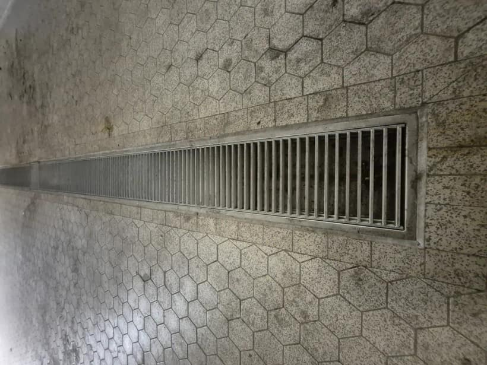

Industrieböden für Produktionsbetriebe
Der Boden entscheidet, ob Ihre Produktion läuft.
HSB plant, baut und saniert säurebeständige, hygienische Industrieböden — nach realem Belastungsprofil statt nach Standardprodukt.
Warum Industrieböden in der Produktion versagen
- Chemischer Angriff durch Säuren, Laugen, Fette und Reinigungschemie
- Stehendes Wasser durch falsches Gefälle
- Keimnester in Nassbereichen und an beschädigten Fugen
- Schäden an Rinnen und Abläufen
- Temperaturwechsel, Staplerverkehr und ständige Reinigung
- Risse und Ablösungen als Folge nicht eingeplanter Belastung
Die Folgen tragen Sie: Produktionsausfälle, wiederkehrende Notreparaturen und Audit-Risiken durch hygienisch mangelhafte Flächen.
Unsere Systeme
Keramische Industrieböden
Industrieboden-Säureschutz
Epoxidharz-Bodenbeschichtung
Entwässerung & Gefälleplanung
Dehnungsfugen & Rammschutz
Bodensanierung im laufenden Betrieb
Wir arbeiten an produktionskritischen Flächen — dort, wo Stillstand teuer ist.
sowie weitere Produktionsbetriebe in Lebensmittel-, Getränke-, Chemie- und Pharmaindustrie bundesweit.
Kostenlose technische Ersteinschätzung anfordern
Belastungsprofil, Untergrund und Sanierungsfenster prüfen — unverbindlich und vor Ort.
Technischer Ablauf
1
Analyse vor Ort
Untergrund, Belastung, Feuchte, Gefälle und Schadensbild aufnehmen.
2
Systementscheidung
Keramik, PU-Beton, Säureschutz oder Beschichtung nach realem Profil.
3
Sanierungsfenster
Bauabschnitte und Zeitplan auf Ihren Betrieb abgestimmt.
4
Ausführung
Fachgerechte Umsetzung — auch im laufenden Betrieb.
5
Dokumentation
Nachvollziehbare Übergabe für Wartung und Audit.
Branchen
Lebensmittelindustrie
Molkereien
Brauereien & Getränke
Chemie
Pharma
Großküchen & Backwaren
Industrielle Nassbereiche
Typische Schadensbilder
- Risse und Ablösungen
- Offene und beschädigte Fugen
- Keimnester in Nassbereichen
- Stehendes Wasser durch falsches Gefälle
- Defekte Rinnen und Abläufe
- Chemisch angegriffene Oberflächen

Prüfen Sie Ihre Flächen
Eine Checkliste für Entscheider in Produktion, Instandhaltung und Qualitätsmanagement.
- Risse oder Ablösungen im Boden?
- Offene oder beschädigte Fugen?
- Stehendes Wasser nach der Reinigung?
- Schäden an Rinnen oder Abläufen?
- Keimnester oder Hygienebeanstandungen?
- Wiederkehrende Notreparaturen?
Ein Kreuz genügt als Anlass für ein Gespräch.